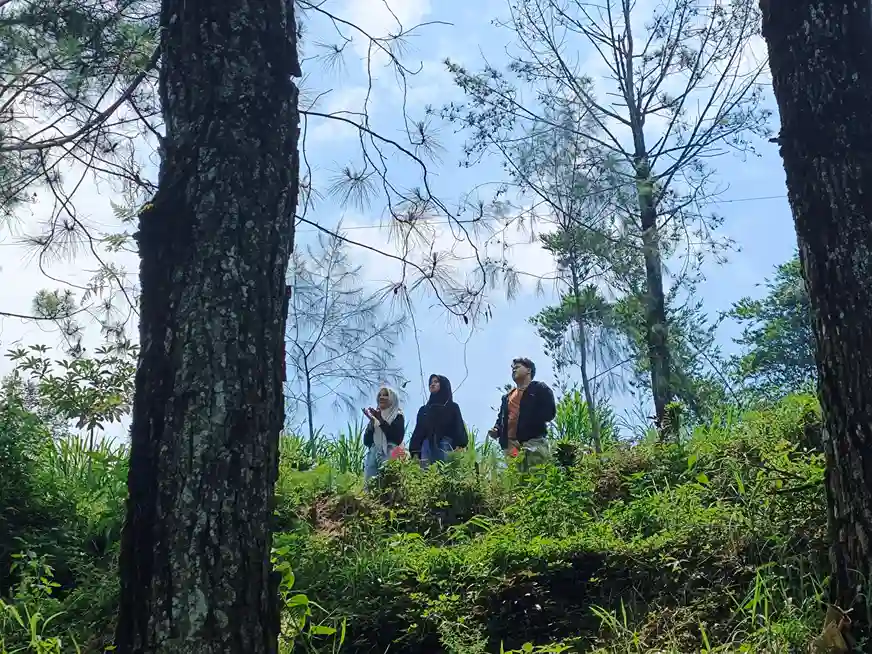
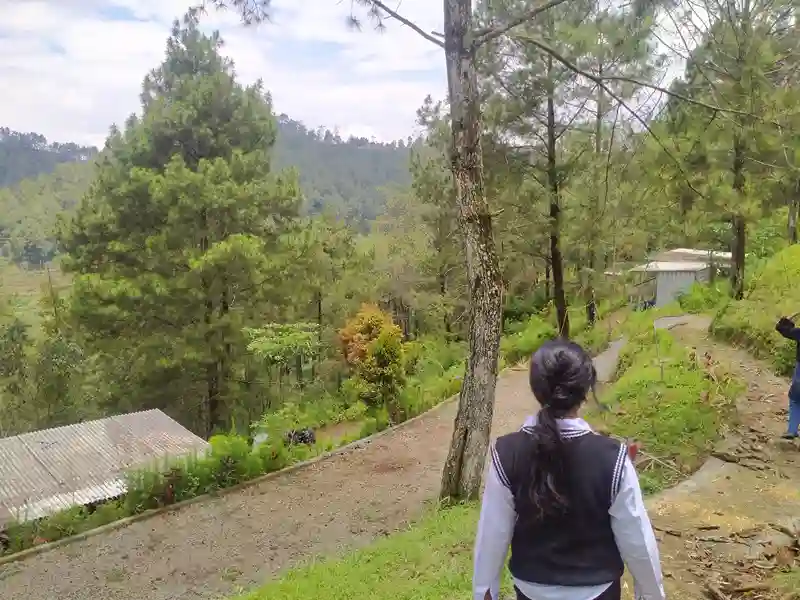

Kegiatan team building di alam terbuka memperkuat ikatan antar anggota tim secara alami.Mengapa perusahaan-perusahaan besar rutin mengadakan kegiatan outbound dan team building setiap tahunnya? Ternyata bukan hanya sekadar liburan — ada manfaat mendalam yang berdampak langsung pada kinerja tim.
Mengapa Team Building Penting?
Di era kerja hybrid dan remote, koneksi emosional antar karyawan sering kali melemah. Team building outdoor menjadi solusi efektif untuk membangun kembali rasa kebersamaan. Studi dari Harvard Business Review menunjukkan bahwa tim yang pernah mengikuti kegiatan outdoor bersama memiliki tingkat kolaborasi 25% lebih tinggi.
Di Batu Camping, kami menyediakan area khusus untuk kegiatan gathering corporate dengan kapasitas hingga 200 orang, lengkap dengan fasilitator berpengalaman.
Manfaat Psikologis Aktivitas Outdoor
Berada di alam terbuka secara ilmiah terbukti mampu menurunkan hormon stres (kortisol) dan meningkatkan produksi endorfin. Ketika karyawan merasa rileks dan bahagia, kreativitas dan kemampuan problem-solving mereka meningkat drastis.
- Menurunkan tingkat stres hingga 40% setelah 2 hari di alam
- Meningkatkan kepercayaan antar anggota tim melalui tantangan bersama
- Membangun komunikasi yang lebih efektif tanpa hierarki kantor
- Meningkatkan kreativitas berkat stimulasi lingkungan baru
"Teamwork is the ability to work together toward a common vision, even if that vision becomes extremely blurry."
— Patrick Lencioni, The Five Dysfunctions of a TeamJenis Kegiatan yang Efektif
Tidak semua kegiatan outdoor efektif untuk team building. Berikut beberapa aktivitas yang terbukti memberikan dampak positif:
- High Rope Course — melatih keberanian dan saling percaya
- Survival Cooking — kolaborasi dalam keterbatasan
- Orienteering — navigasi tim dengan peta dan kompas
- Campfire Session — sharing dan refleksi tanpa batasan jabatan

Tantangan fisik bersama melatih kepercayaan dan komunikasi dalam tim.Tips Merancang Program Team Building
Agar kegiatan tidak hanya menjadi hiburan semata, perhatikan hal-hal berikut:
- Tetapkan tujuan yang jelas sebelum merancang program
- Libatkan seluruh level karyawan tanpa pengecualian
- Pilih lokasi yang mendukung (alam terbuka, jauh dari distraksi kota)
- Gunakan fasilitator profesional untuk debriefing
- Lakukan evaluasi pasca-kegiatan untuk mengukur dampak